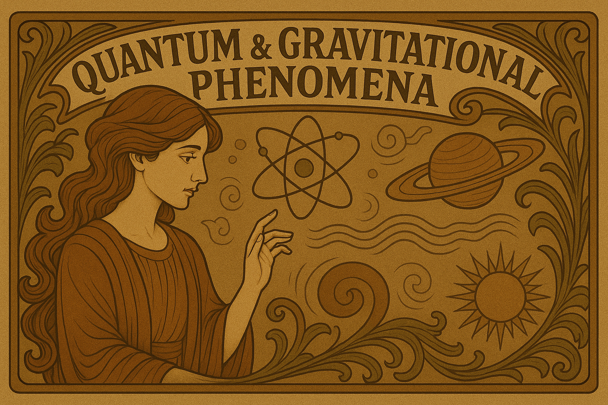

Theme A. Random Walks & Diffusion
A1. Random Walk and Brownian Motion
- Simulate the movement of single or multiple random walkers on a grid.
- Visualize diffusion and estimate first-passage times.
A2. Monte Carlo Pi Estimation
- Simulate random point sampling inside a square to estimate π.
- Visualize how increasing the sample size refines the estimate.
A3. Self-Avoiding Random Walks (Polymer Models)
- Simulate a random walker that cannot cross its own path, mimicking polymer chains.
- Compare the shortest path versus the longest surviving trajectories.
A4. Quantum Walk Simulation
- Develop a quantum mechanical analogue of a random walk.
- Compare the spread of a quantum walk with the diffusive nature of classical random walks.
A5. Diffusion-Limited Aggregation (DLA)
- Create a particle-based simulation where free-moving particles stick upon contact with a cluster.
- Investigate how simple random processes can lead to complex, branched structures.
Theme B. Network Models & Graph Theory
B1. Diffusion on Graphs (PageRank Algorithm)
- Simulate a random walker traversing a network to approximate Google’s PageRank.
- Explore the notion of random walk closeness centrality of a network.
B2. Percolation Theory
- Create a grid-based simulation to demonstrate how connectivity emerges as occupied sites increase.
- Identify the critical percolation threshold where a spanning cluster forms.
B3. Epidemic Threshold in Complex Networks
- Simulate epidemic models on various network topologies.
- Compare epidemic thresholds among random, small-world, and scale-free graphs.
B4. Network Growth and Preferential Attachment
- Simulate the emergence of scale-free networks using the Barabási-Albert model.
- Demonstrate how nodes acquire connections preferentially, forming hubs.
Theme C. Fluid, Waves & Heat Transfer
C1. Heat Conduction in a 2D Grid
- Simulate the heat equation on a discrete lattice.
- Visualize how heat diffuses from a hot source over time.
C2. Cellular Automata for Fluid Dynamics
- Implement a lattice gas model (such as HPP or FHP) to simulate basic fluid flows.
- Visualize how simple, local collision rules lead to macroscopic fluid behavior.
- Experiment with obstacles and various boundary conditions.
C3. Lattice Gas Automata for Traffic Flow
- Simulate cars moving on a highway according to simple traffic rules.
- Implement the Nagel-Schreckenberg model to explore traffic jams and phase transitions.
- Include features such as traffic signals and variable speed limits to observe their effects.
C4. Wave Propagation on a Lattice
- Simulate the propagation of waves by solving the discrete wave equation on a grid.
- Visualize phenomena such as interference, diffraction, and the formation of standing waves.
- Adjust boundary conditions to see different propagation modes.
Theme D. Material Science & Pattern Formation
D1. Active Matter and Swarming Behavior
- Simulate self-propelled particles (like birds, bacteria, or fish) following simple local rules.
- Implement models such as the Vicsek model or Boid flocking to observe collective motion.
- Explore transitions between ordered and disordered states by adjusting noise and interaction radius.
D2. Ising Model Simulation
- Develop a 2D Ising model with adjustable temperature and external field.
- Explore phase transitions and magnetization behavior resulting from local spin interactions.
D3. Reaction-Diffusion Systems (Turing Patterns)
- Simulate the interplay of diffusing chemical concentrations that react to form complex patterns.
- Implement models such as the Gray-Scott or FitzHugh-Nagumo equations.
- Model pattern formation found in animal skins, vegetation patterns, or cell differentiation.
D4. Granular Material and Sandpile Dynamics
- Simulate avalanches, piling, and jamming in granular materials using cellular automata.
- Use self-organized criticality models like the Bak-Tang-Wiesenfeld sandpile.
- Examine how factors such as friction and angle of repose affect behavior.
D5. Growth of Crystals and Snowflakes
- Model crystal formation based on rules of molecular attachment.
- Use diffusion-limited aggregation with anisotropic rules to generate sixfold snowflake structures.
- Explore symmetry and pattern formation in natural crystal growth.
Theme E. Social Dynamics & Game Theory
E1. Simulating the Monty Hall Problem
- Create an interactive simulation of the classic Monty Hall game.
- Show the probability distributions when players choose to switch or stay with their initial choice.
- Extend the simulation to handle more doors or scenarios with partial information.
E2. Conway’s Game of Life with Variable Rules
- Extend the classic Game of Life by allowing tunable birth/survival rules and lattice geometries.
- Introduce stochastic elements and asymmetric reproduction probabilities.
- Observe the emergence of persistent structures and chaotic behavior.
E3. Prisoner’s Dilemma on a Lattice (Evolutionary Game Theory)
- Simulate how cooperation evolves when agents play the Prisoner’s Dilemma with their neighbors.
- Examine how defectors and cooperators spread on a 2D grid.
- Incorporate mutation and selection to allow strategy evolution over time.
E4. The Voting Paradox and Condorcet Cycles
- Simulate a ranked-choice voting system with multiple candidates.
- Demonstrate how Condorcet cycles occur, where no candidate is universally preferred.
- Compare various voting systems such as plurality, runoff, and Borda count.
E5. The Traveling Salesperson Problem (TSP) with Heuristics
- Simulate and visualize heuristic algorithms (e.g., nearest neighbor, simulated annealing) for approximating the shortest route.
- Compare solution efficiency versus optimality across different methods.
- Allow customization of city layouts and parameters.
E6. Braess’ Paradox in Traffic Networks
- Simulate the counterintuitive scenario where adding a road to a network leads to worse overall traffic flow due to selfish routing.
- Compare network equilibrium flows with and without the extra road.
- Illustrate real-world traffic scenarios to highlight the paradox.
E7. Agent-Based Market Simulation (Supply and Demand)
- Model a marketplace where buyers and sellers adjust prices dynamically.
- Implement various pricing strategies such as random, greedy, and auction-based approaches.
- Observe how equilibrium prices emerge from the aggregate behavior of individual agents.
E8. Network-Based Wealth Distribution (Pareto vs. Gaussian)
- Simulate wealth exchange among agents using models analogous to ideal gas dynamics.
- Study how wealth distributions evolve toward Gaussian or power-law (Pareto) profiles.
- Experiment with redistribution policies such as taxation.
E9. The Rock-Paper-Scissors Ecosystem (Cyclic Competition)
- Model cyclic competition among three species (or groups) using rock-paper-scissors dynamics.
- Incorporate spatial interactions on a grid to observe pattern formation and traveling waves.
- Analyze conditions that can lead to periodic extinctions or sustained coexistence.
Theme F. Complex & Chaotic Systems
F1. Bifurcation Diagrams for the Logistic Map (Chaos Theory)
- Simulate the logistic map using xn+1 = r xn(1 - xn).
- Show how varying the parameter r leads to period-doubling bifurcations and chaos.
- Visualize the evolution of attractors and the overall bifurcation diagram.
F2. Predator-Prey Dynamics
- Simulate a system of agents interacting through prey-predator interactions.
- Explore oscillatory dynamics in agent populations.
- Analyze stability conditions that result in persistent cycles or population collapse.
F3. The Arrow of Time and Entropy Growth
- Simulate a system of gas particles in a box starting from a low-entropy, ordered configuration.
- Demonstrate how entropy increases as the particles disperse irreversibly.
- Allow system resets to highlight the statistical improbability of entropy decrease.
Theme G. Quantum & Gravitational Phenomena
G1. Planetary Orbits and N-Body Gravity Simulation
- Implement Newtonian gravity for multiple bodies, including planets, moons, and asteroids.
- Visualize orbital dynamics, including chaotic trajectories and resonances.
- Explore concepts like Lagrange points and orbital stability.
G2. Quantum Tunneling and the Schrödinger Equation
- Simulate the evolution of a quantum wavefunction encountering a potential barrier.
- Visualize the probability density before and after tunneling.
Deliverables:
The finalized project proposals must be submitted to simulathon@gmail.com before April 27th at 17:00. Each submission must include:
- Project title,
- List of participants,
- Brief description of the proposal,
- Link to a demo (if available),
- Link to a GitHub repository (if applicable).